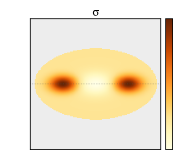
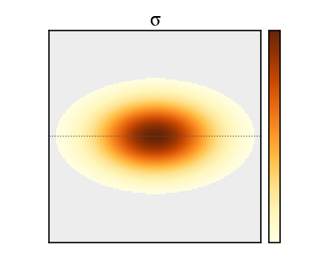
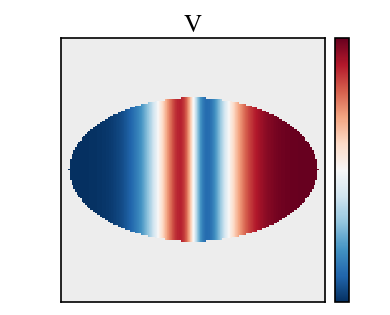
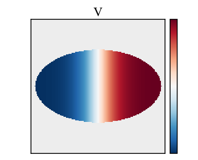

These are maps of the mean stellar velocity (V, left) and velocity dispersion (σ, right) of galaxies from the CIELO cosmological simulations. Each map is a mock observation: the galaxy is placed at z = 0.03 and observed as an integral field spectroscopy survey would observe it. The maps show galaxies observed at different inclinations and with different instruments.
In some galaxies, part of the stars rotate in the opposite direction to the rest. In surveys, these galaxies are often found by eye, from two off-centre peaks in σ (a 2σ galaxy) or from a change in the sign of V away from the centre. We want to measure how well this works, so we ask you to classify the maps without knowing which galaxy each one shows.
Classify as many maps as you like; you do not need to finish them all. Maps that nobody has classified yet appear first. Your answers are kept in this browser until you press Send, and you can come back later and send more.
Your code: . Your answers are linked to this code. To continue on another device, enter it there.




These are sketches, not simulated maps. When to answer «unsure» is up to you. Each map has its own colour scale, so read the colour bar. Grey areas have no data.
Is there a 2σ feature in the σ map?
Does V change sign away from the centre?